La Ventana · Baja California Sur
Safari oceánico en el canal de Cerralvo. Salimos a buscar lo que el mar quiera dar ese día.
La experiencia
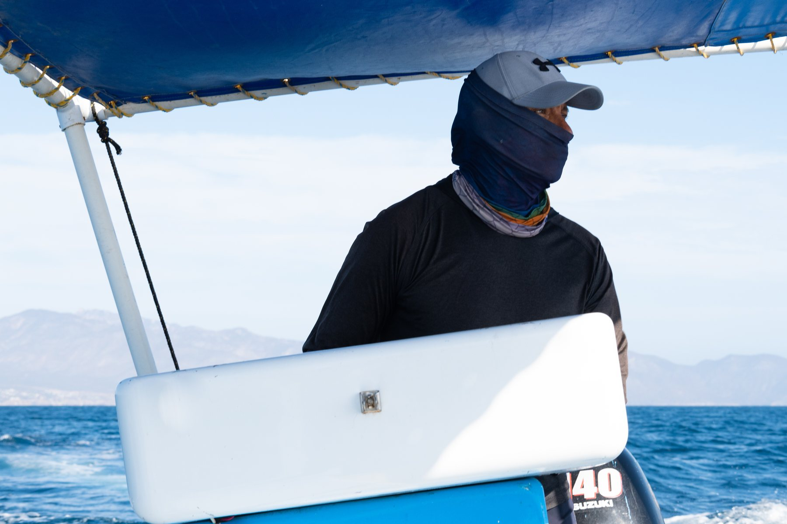
Salimos a las siete de la mañana en panga desde La Ventana o desde Bahía de los Sueños, y navegamos el canal de Cerralvo buscando vida. Nadie sabe qué va a aparecer. Ese es exactamente el punto.
El canal es uno de los corredores biológicos más ricos del Mar de Cortés: corrientes profundas que suben nutrientes y traen de todo. Mobulas por decenas de miles. Delfines. Lobos marinos. Ballenas de paso. A veces orcas.
Cuando encontramos algo, nos metemos al agua con ellos. Cuando no, hay arrecife para snorkelear y una playa en Isla Cerralvo donde probablemente no haya nadie más.
Abril a julio
Las mobulas se agregan en el canal de Cerralvo y saltan fuera del agua por miles. Es de los espectáculos marinos más impresionantes del mundo, y La Ventana es de los mejores lugares del planeta para verlo.
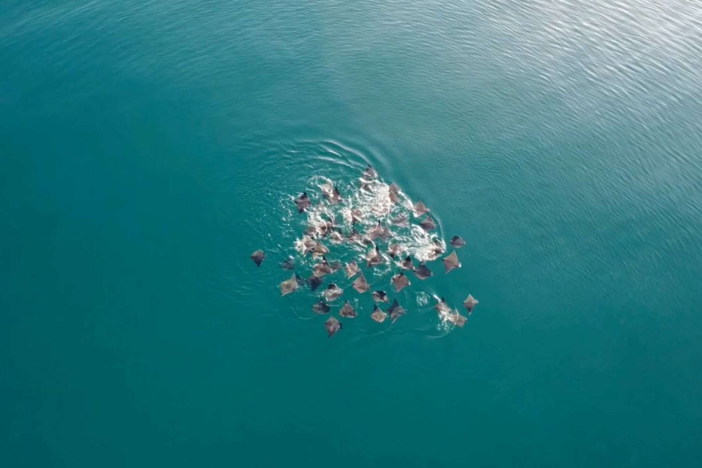
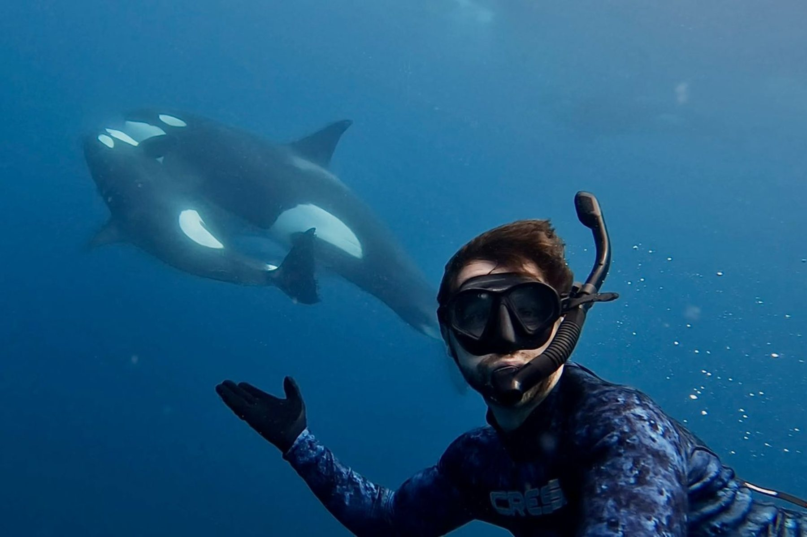
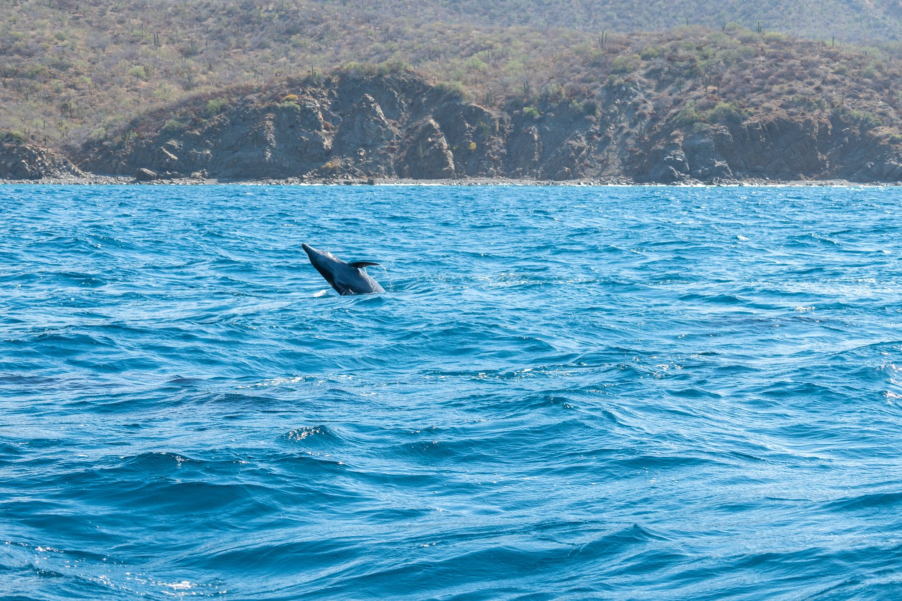
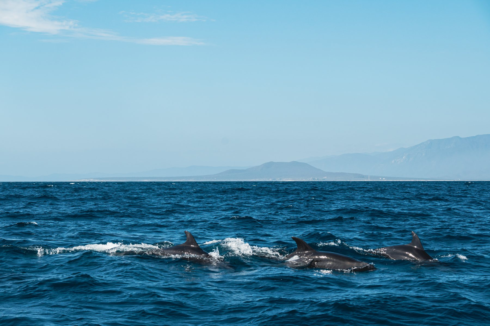
El día
Desde el poblado de La Ventana o desde Bahía de los Sueños, según dónde te quedes. Temprano, porque el mar está más plano y los animales más activos.
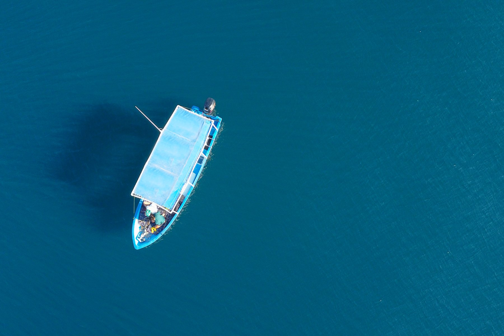
Navegamos el canal buscando actividad. El capitán y el equipo llevan años leyendo esta agua: saben dónde mirar y qué significa cada señal en la superficie.
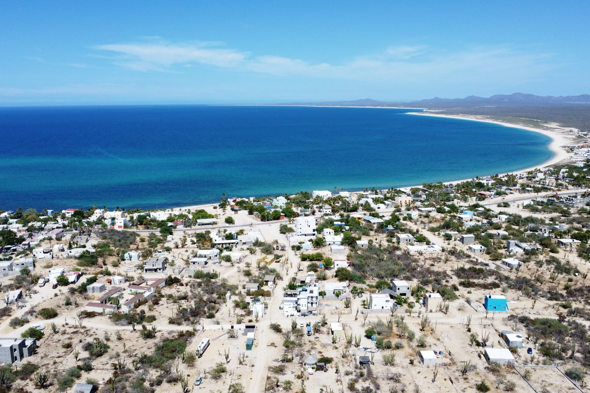
Si las condiciones y el comportamiento del animal lo permiten, entramos a nadar. Con respeto, sin perseguir, y siempre siguiendo la indicación del guía.
Parada para snorkelear en arrecife. Equipo incluido. Peces tropicales, formaciones y agua clara.
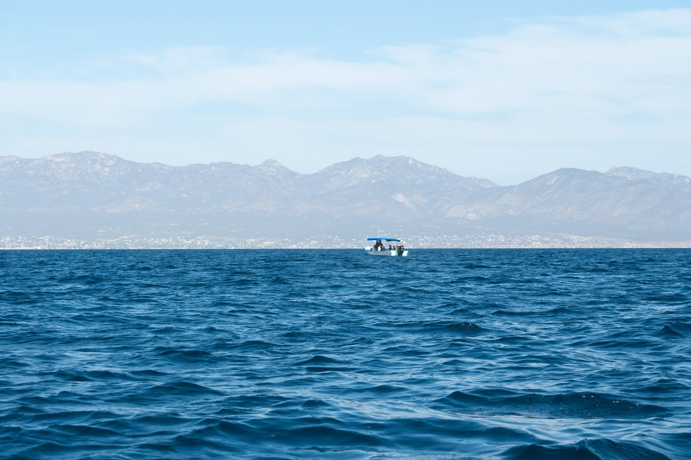
Bajamos a descansar a una playa de la isla. Comida, agua fría y un rato sin hacer absolutamente nada.
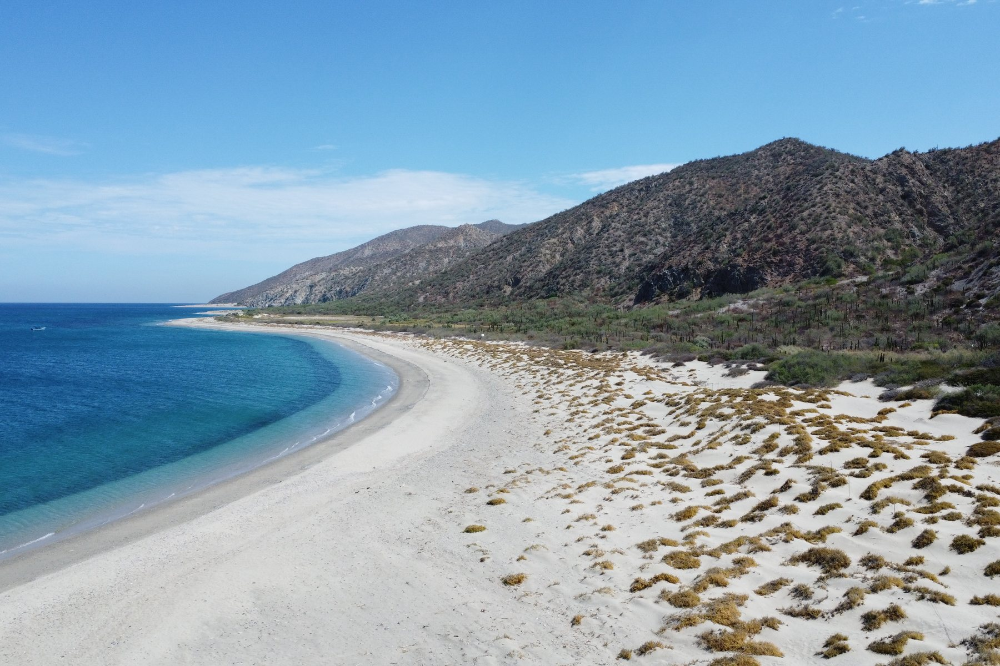
Temporada
Cada época del año trae algo diferente al canal. Esto es lo que puedes esperar según cuándo vengas.
Mobulas. Decenas de miles de mobulas se agregan en el canal y saltan fuera del agua. Es uno de los espectáculos marinos más impresionantes del mundo y La Ventana es de los mejores lugares del planeta para verlo. El pico es mayo y junio.
Orcas. Como las orcas cazan mobulas, estos son los meses con más avistamientos. No están garantizadas nunca, pero si van a aparecer, es ahora.
Agua cálida y clara. La mejor temporada para snorkelear el arrecife. Delfines, lobos marinos, tortugas y rayas. Menos gente, más tiempo en el agua.
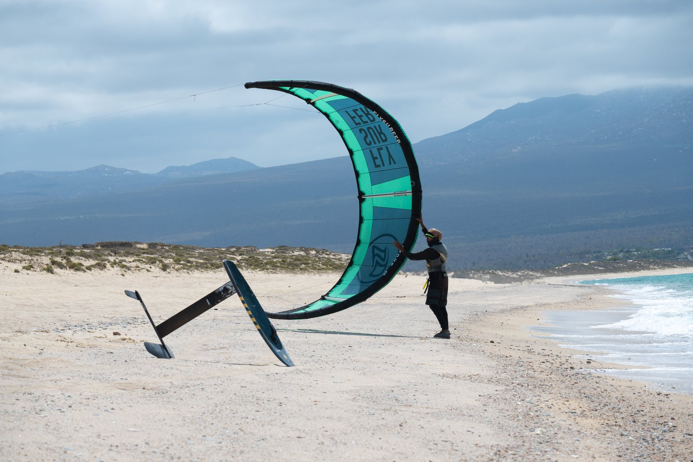
Ballenas. Jorobadas, de aleta, azules y cachalotes cruzan el canal entre la costa y la isla. También es temporada de viento, que es lo que hace de La Ventana un destino de kitesurf.
Delfines, lobos marinos y tortugas. Viven aquí. El arrecife y la playa de Isla Cerralvo están siempre.
Sobre la fauna: esto es mar abierto, no un acuario. Nadie puede garantizar qué vas a ver ni si se va a poder entrar al agua — depende del clima, del oleaje y del comportamiento de los animales ese día. Lo que sí está garantizado son seis horas en uno de los mares más ricos del mundo, el arrecife y la isla.
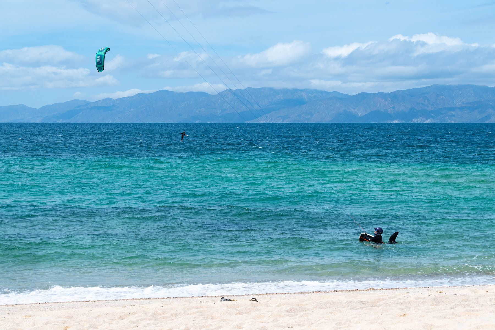
Incluye
Para tu grupo, hasta 7 personas. No se comparte con otros.
Equipo local con años leyendo este canal.
Visor, snorkel y aletas para cada persona.
Algo de comer, agua y refrescos durante el día.
Snorkel en arrecife con peces tropicales.
Descanso en una playa donde rara vez hay alguien más.
Inversión
pesos · panga completa · hasta 7 personas
La panga es privada y el precio es por embarcación, no por persona. Entre más sean, menos cuesta a cada quien. Si vienen menos de cuatro, puedo intentar unirlos con otro grupo — dímelo al escribir.
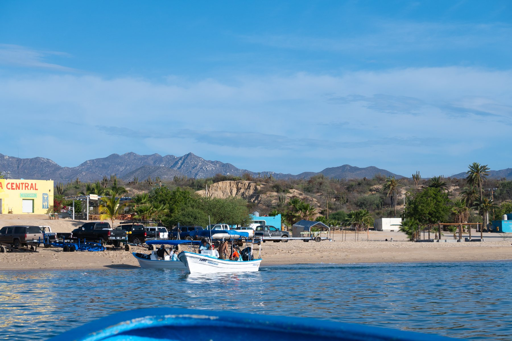
Opcional
La Ventana está a 45 minutos de La Paz y a unas tres horas de Los Cabos. Si vas a hacer el safari, tiene todo el sentido quedarse — el mar está mejor temprano y el pueblo vale la pena.
Coordino alojamiento en Casa Arrecife, a unos pasos de donde sale la panga. Dímelo en el formulario y lo armo junto con la reserva del safari.
Preguntar por alojamientoTambién en La Ventana
La Ventana no es sólo mar. Si vas a estar unos días, hay más — y lo coordino igual.
De noviembre a marzo el viento convierte esta bahía en uno de los mejores spots del mundo. Clases y equipo para todos los niveles.
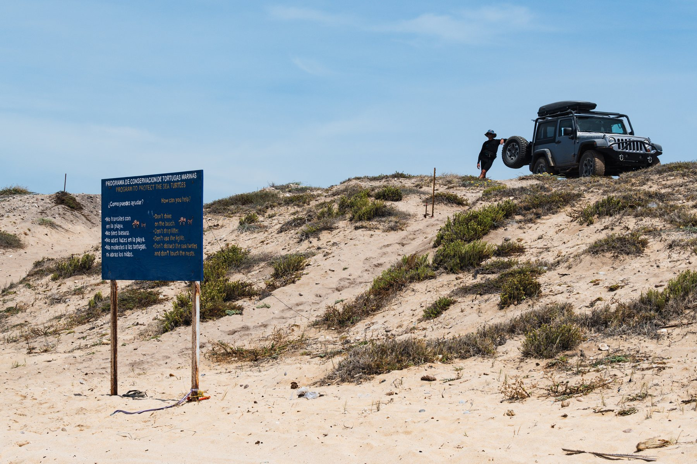
El otro lado de Baja: cañones, caminos de terracería y playas a las que sólo se llega por tierra.
A 45 minutos está La Paz, y desde ahí Balandra y Espíritu Santo. Se puede armar como día completo.
¿Te interesa alguna? Ponlo en el formulario y lo armamos junto con el safari.
Reservar
Escríbeme y yo coordino todo: fecha, punto de salida, alojamiento si lo necesitas, y te pongo en contacto directo con el equipo en La Ventana.